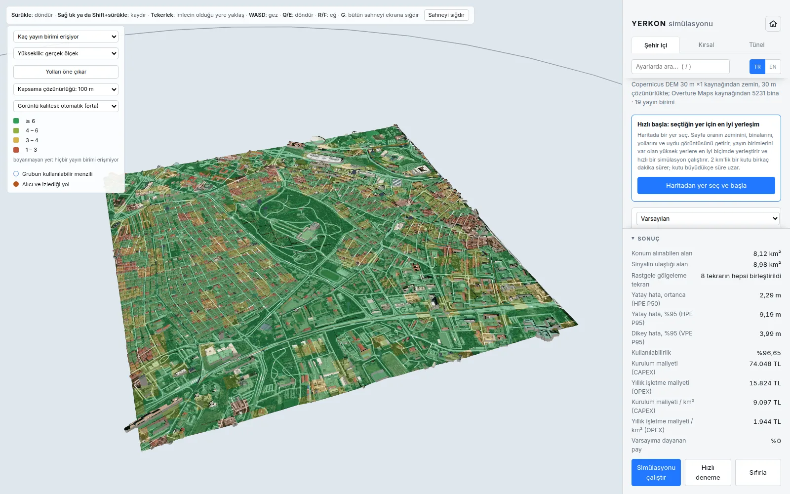

Simülasyonun çalışma yöntemi
Simülasyon, yayın birimlerini Ankara'nın gerçek arazi verisi üzerine yerleştirmekte ve bir alıcıyı yol boyunca hareket ettirmektedir. Alıcı her adımda yayın birimlerine olan mesafeyi ölçmekte ve konumunu bu ölçümlerden hesaplamaktadır; hesaplanan konum gerçek konumla karşılaştırılarak hata belirlenmektedir. Sonuçlar saha ölçümü değil, simülasyon çıktısıdır.

Gerçek arazi verisi
- Üç senaryonun tamamı Ankara yakınlarındaki gerçek arazi verisi üzerinde çalıştırılmaktadır. Arazi verisi Copernicus'un 30 m çözünürlüklü yükseklik modelinden bir kez indirilmiş ve yazılım paketine eklenmiştir; böylece kaynak kodu indiren herkes tabloyu internet bağlantısı olmadan yeniden üretebilmektedir.
- Şehir içi senaryo Kızılay'dadır: bir kenarı üç kilometre olan alanda en alçak ve en yüksek nokta arasında 91 metre fark bulunmaktadır. Kırsal senaryo Polatlı ovasındadır: bir kenarı yirmi kilometre olan alanda yükselti farkı 486 metredir. Tünel senaryosu, Kızılcahamam'daki dağların içinden geçen gerçek ve iki kilometre uzunluğundaki bir tüneldir.
- Simülasyonda "düz zemin" seçeneği bulunmamaktadır. Düz bir yüzey en tarafsız değil, en elverişli arazi koşuludur ve sonuçların olduğundan iyi görünmesine yol açacaktır.
Menzilin belirlenmesi
- Kodda sabit bir azami menzil değeri tanımlanmamıştır. Menzil, sinyalin yol boyunca ne kadar zayıfladığının hesabından elde edilmektedir. Aynı hesap iki konuyu birlikte belirlemektedir: bağlantının kurulup kurulamayacağını ve kurulduğu durumda ölçümün ne kadar hassas olacağını.
- Sinyal alıcıya iki yoldan ulaşmaktadır: doğrudan ve zeminden yansıyarak. Belirli bir mesafeden sonra bu iki bileşenin fazı kaymakta ve birbirlerini zayıflatmaktadır (iki ışınlı model). Bu mesafe anten yüksekliğiyle birlikte artmaktadır; dolayısıyla yayın biriminin alçağa yerleştirilmesi menzili azaltmaktadır.
- Sinyal engellerin üzerinden kırınıma uğramakta ve bu sırada zayıflamaktadır. Hesap, yol üzerindeki en kötü tek engeli değil arazinin tamamını dikkate almaktadır (ITU-R P.526-15 §4.5.2, delta-Bullington). Kızılay'daki bir bağlantının önünde ortanca değer olarak üç, en kötü durumda on altı engel bulunmaktadır.
- Arazi kesiti her on metrede bir örneklenmektedir. Sabit 64 noktada örneklenmesi durumunda 6,9 km'lik bir kırsal bağlantı 108 metrede bir örneklenmiş olacak; aradaki tümsekler atlandığı için doğru değeri 37,60 dB olan kayıp 31,28 dB olarak hesaplanacaktı.
- Bir bağlantıda bu iki kaybın toplamı değil, büyük olanı dikkate alınmaktadır. Her ikisi de aynı arazinin aynı bağlantı üzerindeki etkisini ifade ettiğinden toplanmaları aynı engelin iki kez hesaba katılması anlamına gelecektir.
- Bu kayıplara gölgeleme etkisi eklenmektedir: aynı uzaklıktaki iki bağlantı, aradaki engellere bağlı olarak farklı sonuç vermektedir. Gölgeleme, görüş hattı açıkken 4 dB, kapalıyken 7,8 dB standart sapmayla modellenmektedir (3GPP TR 38.901). Etki rastgele olduğundan hesap sekiz kez tekrarlanmakta ve sekiz çekilişin sonuçları birlikte değerlendirilmektedir.
Mesajlaşma ve konum hesabı
- Mesafe hesaplanmamakta, ölçülmektedir. İki telsiz karşılıklı mesaj göndermekte; SX1280'de bir ölçüm alışverişi, Göndermeden Önce Dinle (LBT) kuralının gerektirdiği %5'lik bekleme dahil 33,4 milisaniye sürmektedir.
- On iki yayın birimiyle sırayla ölçüm yapılması 401 milisaniye sürmektedir. 100 km/sa hızla giden bir araç bu sürede 11,1 metre yol almaktadır; dolayısıyla bir turdaki ölçümler tek bir zaman anına ait değildir ve hesap bu farkı dikkate almaktadır.
- Konumu hesaplayan kod, aracın gerçek konumuna hiçbir aşamada erişmemektedir. Kullanılan bilgiler yalnızca ölçülen mesafe, yayın biriminin kurulumda ölçülen konumu, ölçümün zamanı ve ölçümün güvenilirlik düzeyidir.
- Yol kenarına yerleştirilen yayın birimleri yaklaşık aynı yükseklikte bulunduğundan düşey konumun yalnızca mesafe ölçümlerinden belirlenmesi güçtür. Bu nedenle filtre, yolun yüksekliğini alıcıdaki yükseklik haritasından bir ölçüm olarak almaktadır; haritanın 2,43 m'lik hatası yol boyunca parçalı olarak modellenmektedir. VPE sütunu bu yaklaşımın sonucudur.
- Yatay hatanın ortancası (HPE P50)
- Yatay hata, en kötü %5 hariç (HPE P95)
- Hataların ortancadan P95'e dağılımı
- Düşey hata, en kötü %5 hariç (VPE P95)
Ortalama alınarak giderilemeyen üç hata
- Görüş hattı kapalı bir bağlantı, mesafeyi olduğundan uzun ölçmektedir. Sinyal engelin çevresinden dolaşmakta ve ölçüm bu uzun yolu kaydetmektedir. Hata her zaman aynı yönde olduğundan daha sık ölçüm yapıp ortalama almak bu hatayı gidermemektedir.
- Yayın biriminin konumu kurulumda hatalı ölçüldüyse bu hata kalıcıdır. Bu hata her yayın birimi için bir kez belirlenmekte ve simülasyon boyunca korunmaktadır. Tünelde hataların ortancası, kusursuz bir konum ölçümüyle 0,12 m iken 15 cm'lik konum ölçüm hatasıyla yaklaşık beş katına çıkmaktadır. Hesaplanan konum, yayın birimlerinin konum ölçümünden daha doğru olamaz.
- Kaybolan mesaj ölçüm üretmez. 2,4 GHz bandı kablosuz ağlarla paylaşıldığından yoğundur. Simülasyonda mesajların şehir içinde %15'inin, açık yolda %5'inin kaybolduğu, tünelde ise kayıp olmadığı varsayılmaktadır.
Simülasyonun kapsamı dışında kalanlar
- Aracın atalet ölçüm birimi ve odometri verisi kapsam dışında bırakılmıştır. Filtre yalnızca telsiz ölçümlerini ve yükseklik haritasından elde edilen yüksekliği birleştirmektedir.
- Sinyalin bina duvarlarından yansıyarak birden fazla yoldan gelmesi (çok yollu yayılım) simülasyona ayrıca dahil edilmemiştir; zeminden yansıma ve görüş hattı kapalı bağlantının mesafeyi uzun ölçmesi ise modellenmiştir. Telsizin kendi gürültüsü ve ölçüm alışverişi sırasındaki saat kayması da simülasyonda yer almaktadır.
- Ağaçlar simülasyona dahil edilmemiştir. Zemin ve binalar gerçek verilere dayanmakta, ancak ağaçlar için ayrı bir kayıp hesaplanmamaktadır. Ağacın arkasında kalan bir bağlantı gerçekte daha zayıf olabilir.
- Tünel kaybı, gerçek bir karayolu tünelinde 2,8-5 GHz bandında ölçülmüş bir modelden alınmış ve 6,5 GHz'e taşınmıştır; 6,5 GHz'de ölçülmemiştir.
- Güvenlik katmanı da simülasyona dahil edilmemiştir: imza doğrulama, anahtar yönetimi ve yayın birimlerinin merkeze gönderdiği durum mesajları simülasyonda yer almamaktadır.
Mevcut yüksek yapıların kullanılması
Şehir içi ve kırsal senaryolarda yayın birimleri bir ızgaraya değil, bir yerleşim aramasının belirlediği noktalara yerleştirilmektedir; simülatördeki En iyi yerleşimi bul bölümü ve Hızlı başla kutusu aynı aramayı haritadan seçilen başka bir bölge için çalıştırmaktadır. Aday noktalar mevcut aydınlatma direkleri ve tabelalar, yol boyundaki direkler (şehir içinde aydınlatma direkleri, kırsalda elektrik dağıtım direkleri) ve tepelere dikilecek 25 m'lik direklerdir. Çatılar kira gerektirdiğinden aday olarak değerlendirilmemektedir. Her aday bağlantı bütçesiyle sınanmakta ve seçim, ömür boyu maliyeti esas alan bir kapsama araması ile yapılmaktadır. Bir noktanın kapsanmış sayılması için bu noktaya dört yayın biriminin ulaşması ve bu birimlerin noktanın çevresindeki dört çeyreğin en az üçüne dağılmış olması gerekmektedir. Tek bir caddenin tek bir tarafına dizilmiş birimler, o cadde boyunca konum belirleyememektedir.
Arama, yerleşim noktalarını belirlemekte ve kendi hızlı tahminini sunmaktadır; yerleşimin gerçek doğruluğu ise simülasyonla ölçülmektedir. Önerilen yerleşim uygulanıp Simülasyonu çalıştır düğmesine basıldığında, yeni yerleşim yerini aldığı yerleşimle aynı güzergâh üzerinde karşılaştırılmaktadır.
Tarayıcıda ve yerel bilgisayarda çalıştırma
Simülasyonu çalıştır düğmesi simülatörü bu tarayıcıda açmaktadır. Hesaplamalar herhangi bir sunucuda yapılmamaktadır: Python, numpy ve projenin kendi yazılım paketi sayfaya indirilmekte ve tüm işlemler kullanıcının bilgisayarında yürütülmektedir. İlk açılışta yaklaşık 20 MB veri indirilmekte ve bu işlem bir dakika kadar sürebilmektedir; sonraki açılışlarda tarayıcı bu dosyaları önbellekten kullanmaktadır. Tarayıcıda hesaplama tek işlemci çekirdeğiyle yapıldığından bir çalıştırma, bilgisayara kurulan sürüme göre daha yavaştır; Hızlı deneme seçeneği süreyi kısaltmaktadır.
Tablonun yeniden üretilmesi, başka bir şehrin arazi verisinin indirilmesi veya üç senaryonun birlikte tam çözünürlükte çalıştırılması için gerekli kod ve talimatlar GitHub üzerinde yer almaktadır.
Hızlı deneme
Simülatördeki Hızlı deneme düğmesi iki hesabı basitleştirmektedir: gölgeleme sekiz çekilişin birleşimi yerine tek çekilişle hesaplanmakta ve arazi kesiti 10 m'de bir yerine sabit 64 noktada örneklenmektedir. Böylece bir çalıştırmanın süresi on beş dakikadan yaklaşık bir dakikaya inmektedir.
Seyrek örneklenen arazi, kırınım kaybının düşük hesaplanmasına yol açmakta ve hızlı sonucu çoğunlukla olduğundan iyi göstermektedir. Gölgelemenin tek çekilişle hesaplanması sonucu her iki yönde de saptırabilmektedir: aynı yerleşimde bir senaryo hızlı denemede daha iyi, bir diğeri daha kötü çıkabilmektedir. Hızlı deneme yalnızca ön değerlendirme amaçlıdır; Karşılaştırma sayfasındaki tablo yalnızca tam çözünürlüklü çalıştırmadan elde edilmektedir.